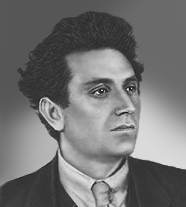

Зиновьев Г.Е.
Зиновьев Григорий Евсеевич (настоящая фамилия — Радомысльский; в различных источниках указываются первое имя Евсей и Овсей, второе имя Герш, Гершен, Гершон и Гирш, отчество Аронович, партийная кличка Григорий)
Революционер, советский политический и государственный деятель.
11(23).09.1883— 25.08.1936
Родился в Елисаветграде (в 1924—1934 гг. в его честь носил название Зиновьевск, ныне Кировоград) в состоятельной еврейской семье владельца молочной фермы Аарона Радомысльского. Получил домашнее образование под руководством отца. Участвовал в организованном революционном движении с 1901 г., когда и стал членом РСДРП. Подвергшись преследованию полиции за организацию стачек рабочих в Новороссии, в 1902 г. эмигрировал в Берлин, затем жил в Париже и Берне, где в 1903 г. и познакомился с В.И. Лениным. Впоследствии был одним из наиболее близких к вождю партии людей и долгое время его постоянным представителем в социалистических организациях Европы. На II съезде РСДРП Зиновьев поддержал позицию Ленина, примкнув к большевикам, после чего вернулся на родину, где проводил активную пропагандистскую работу на территории Украины.
По причине болезни в 1904 г. вновь покинул страну. Вскоре поступил на химический факультет Бернского университета, однако прервал учёбу для участия в революции 1905—1907 гг. Вернувшись в Россию, был избран членом Петербургского горкомитета РСДРП. Из-за новых приступов вновь вернулся в Берн, поступив на этот раз на юридический факультет. Некоторое время спустя в марте 1906 г. снова находился в Петербурге. На V Лондонском съезде партии избран в состав ЦК (получил больше всех голосов после Ленина). Стал одним из редакторов подпольно издававшихся газет «Социал-демократ» и «Вперёд». В 1908 г. был арестован, но через 3 месяца освобожден из-за болезни, после чего вновь эмигрировал — совместно с Лениным выехал на территорию австрийской Галиции.
3 апреля 1917 г. Григорий Зиновьев с семьей возвратился в Россию. На следующий день он выступил против оглашённых Лениным «Апрельских тезисов». После событий 4 июля 1917 г. скрывался от преследований Временного правительства в Разливе вместе с Лениным. В большевистском списке по выборам в Учредительное собрание шёл вторым после Ленина. 10 октября (23 октября по новому стилю) на закрытом заседании большевистского ЦК совместно со Л.Б. Каменевым выступил против ленинской резолюции о вооружённом восстании и проголосовал против свержения Временного правительства в ходе восстания, считая его преждевременным. Более того, Зиновьев и Каменев продемонстрировали свою оппозицию к большинству членов ЦК ещё и своим открытым выступлением в органе меньшевиков «Новая жизнь», фактически вскрыв перед правительством намерения большевиков и левых эсеров. Ленин считал эти действия Зиновьева и Каменева предательскими: «Каменев и Зиновьев выдали Родзянко и Керенскому решение ЦК своей партии о вооружённом восстании…» Поэтому руководством большевистской партии ставился вопрос об исключении их из партии, но ограничились запретом выступать от имени ЦК.
Вскоре после захвата власти в Петрограде большевиками и левыми эсерами в ходе Октябрьского вооружённого восстания 25 октября (7 ноября по новому стилю) 1917 г. наметились первые выступления против новой власти. 29 октября Викжель — Всероссийский исполнительный комитет железнодорожников — провозгласил забастовку с требованиями формирования из партий эсеров, меньшевиков и большевиков однородного социалистического правительства без участия в нём лидеров революции Ленина и Троцкого. Зиновьев, Каменев, Виктор Ногин и Алексей Рыков среагировали на эти требования совместной позицией относительно необходимости переговоров с Викжелем и исполнения его требований, объясняя это потребностью в объединении всех социалистических сил для противостояния угрозе контрреволюции. Несмотря на то, что эта группа смогла на некоторое время склонить на свою сторону относительное большинство членов ЦК, провал выступления Керенского — Краснова на подступах к Петрограду позволил Ленину и Троцкому прервать наметившиеся переговоры с бунтующим профсоюзом. В ответ 4 ноября Зиновьев, Каменев, Рыков, Ногин и Милютин подали заявления о выходе из состава Центрального комитета. На следующий день Ленин выступил с заявлением, в котором осудил позицию покинувших ЦК большевиков, назвав их «дезертирами».
Тем не менее, вскоре Зиновьеву было разрешено вернуться к политической деятельности. С декабря 1917 по март 1918 г. он являлся председателем Петроградского (впоследствии Ленинградского) Совета. В Петрограде на протяжении Гражданской войны также занимал посты председателя Совнаркома Петроградской трудовой коммуны, председателя Совнаркома Союза коммун Северной области (май 1918 г. — февраль 1919 г.) и председателя Комитета революционной обороны Петрограда, а также члена Реввоенсовета 7-й армии. Руководил обороной города от наступавших белых армий Юденича. В силу своих широких полномочий в качестве руководителя Петрограда Зиновьев выступал против решения В. И. Ленина перенести столицу Советской России в Москву.
Поддержав позицию Ленина относительно подписания Брестского мира с Германией и Австро-Венгрией, вновь вернул себе расположение Председателя Совнаркома. В состав Центрального комитета Зиновьев был возвращён на VII съезде партии 8 марта 1918 года. Через год был избран членом вновь созданного Политбюро без права голоса на VIII партийной конференции 25 марта 1919 г.
Высокое доверие к нему в партии было выражено и в назначении Зиновьева председателем Исполкома Коммунистического Интернационала (на посту с марта 1919 г. до 1926 г., ушёл в результате конфликта со Сталиным). Именовался «вождём Коминтерна». В 1921—1926 гг. являлся членом Политбюро. Стремясь стать одним из главных лидеров партии, Зиновьев выступал с отчетными докладами на XII и XIII съездах РКП(б). Пропагандировал ленинское наследие, печатая огромное количество книг со своими статьями, речами и т.д. Было начато издание его собрания сочинений.
Зиновьев сыграл важную роль в возвышении Сталина. Именно по идее Зиновьева в 1922 г. Каменев предложил назначить Сталина на пост Генерального секретаря ЦК РКП(б). На XII съезде партии в 1923 г. Зиновьев выступал с политическим отчетом ЦК, вместе с Каменевым и Сталиным в составе т.н. "тройки Каменев—Зиновьев—Сталин" вёл в это время борьбу против Троцкого. Но в декабре 1925 г., на XIV съезде ВКП(б), Зиновьев, поддержанный Каменевым и ленинградской делегацией, от имени «новой оппозиции» выступил против группы Сталина (Молотов, Рыков, Бухарин и др.) и партийного большинства. В 1926 г. его отстранили от руководства Ленсоветом и Исполкомом Коминтерна, решением пленума ЦК вывели из Политбюро. Объединение с Троцким привело к тому, что в 1927 г. Зиновьева вывели также из ЦК, исключили из партии и выслали. Сторонники Зиновьева также понесли наказания по партийной и служебной линии.
В 1928 г., после покаяния, Зиновьев был восстановлен в партии, назначен ректором Казанского университета. Занимался литературно-публицистической деятельностью. В конце 1932 г. вновь исключён (за недоносительство), арестован, Особым совещанием при ОГПУ осуждён на 4 года ссылки и выслан в Акмолинск. В 1933 г. по решению Политбюро восстановлен в рядах ВКП(б) и направлен на работу в Центросоюз. 16 декабря 1934 г. Зиновьев арестован и вскоре осужден на десять лет тюрьмы по делу «Московского центра». Содержался в Верхнеуральском политизоляторе. 24 августа 1936 г. Зиновьев был приговорён к высшей мере наказания по делу Антисоветского объединенного троцкистско-зиновьевского центра. Расстрелян 25 августа в Москве в здании ВКВС. Реабилитирован Пленумом Верховного Суда СССР 13 июля 1988 г.
| Запорожец П.К.< Предыдущая | Следующая >Зорин С.С. |
|---|